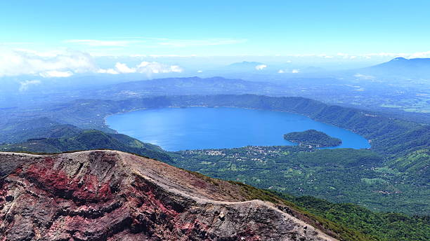
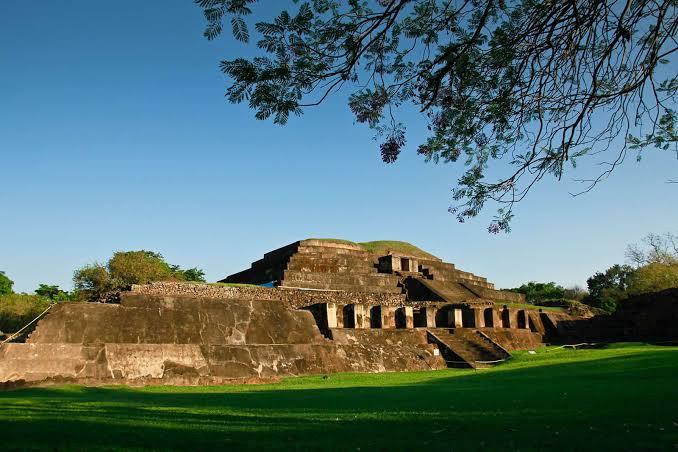

Lago de Coatepeque

- Nombre: Lago de Coatepeque
- Región: Santa Ana
- Municipio: El Congo
- Categoría: Naturaleza
- Descripción: Gran lago de origen volcánico dentro de una caldera, famoso por sus aguas de color azul turquesa que cambian de tono según la luz. Es un lugar ideal para paseos en lancha, kayak, miradores y restaurantes con vista al agua, rodeado de montañas y cerca del volcán de Santa Ana.
- Precio: Desde $3.00
- Horario: 7:00 a. m. – 6:00 p. m.
- Cómo llegar: A unos 50 minutos de Santa Ana y a 1 hora y 15 minutos de San Salvador por la carretera hacia El Congo y el desvío a Coatepeque.
- Destacado: Sí
Parque Arqueológico Tazumal

- Nombre: Parque Arqueológico Tazumal
- Región: Santa Ana
- Municipio: Chalchuapa
- Categoría: Cultura
- Descripción: Sitio arqueológico maya con una pirámide principal y plataformas ceremoniales que muestran siglos de ocupación. Cuenta con un museo que exhibe cerámica, piezas de jade y objetos hallados en la zona, y es uno de los sitios prehispánicos más importantes de El Salvador.
- Precio: Desde $3.00
- Horario: 9:00 a. m. – 4:00 p. m.
- Cómo llegar: En el centro de Chalchuapa, a unos 15 minutos de Santa Ana y a 1 hora y 20 minutos de San Salvador por la carretera a Santa Ana.
- Destacado: No